AI Research Scientist
Wix
Making Websites beatiful — not like this one ):
AI Research Scientist · Wix
I'm an AI Research Scientist at Wix, working on diffusion, multimodal models, and the engineering required to take ideas from paper to production. Previously at Reality Defender, NLPearl, and Pashoot Robotics.
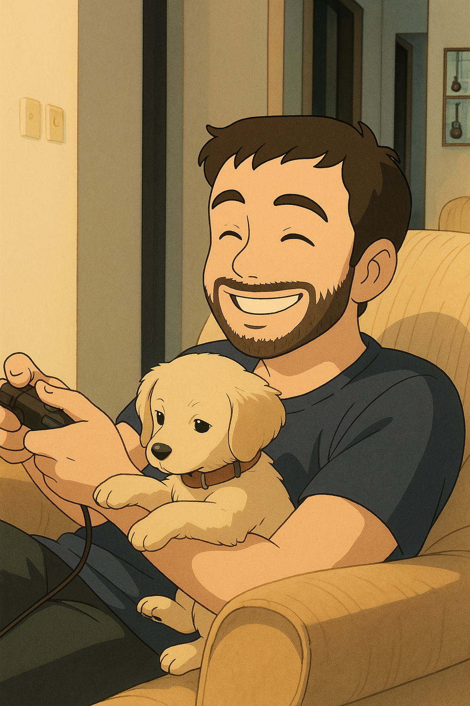
I'm an AI Research Scientist at Wix, working across computer vision and NLP with a focus on multimodal models and text-to-image / text-to-video diffusion. My work bridges research and engineering: building data and training pipelines, running rigorous evaluations, and getting models to run on a single GPU — and, when needed, on the edge.
Wix
Making Websites beatiful — not like this one ):
Reality Defender
Developed and optimized deep-learning computer-vision systems for deepfake and synthetic-media detection across image, video, and video+audio. Multi-model architectures combining specialist detectors with shared backbones for production-scale inference.
LuckyLab · Freelance
Edge-optimized segmentation and detection for production in a few-shot domain. Converted research models to production graphs (JAX, TensorRT) with quality gates using pruning and quantization.
NLPearl
Compact language models for multi-task outputs, audio tokenizers and LLMs for audio tasks, and real-time conversational pause detection with fine-tuned LLMs. LoRA and multi-stage training under tight latency budgets.
Pashoot Robotics
Zero/few-shot improvements with SAM, YOLO-World, Grounding DINO, and CLIP. Multi-object tracking and 6-DoF pose estimation using synthetic data and domain randomization, plus 3D reconstruction (NeRF, Gaussian Splatting, image-to-3D) for simulation.
A current project — drag the slider to compare base output to the ES-trained LoRA.
An EGGROLL-style implementation of low-rank Evolution Strategies from "Evolution Strategies at the Hyperscale" (Sarkar et al., 2025), adapted for text-to-image alignment post-training. The base generator stays frozen, and we optimize only a LoRA adapter using black-box reward signals (e.g., PickScore as the objective), with CLIP / aesthetic / no-artifacts as diagnostics. This enables fast iteration on alignment objectives at near inference throughput, without diffusion backprop.
| Model | aesthetic ↑ | CLIP text ↑ | no artifacts ↑ | PickScore ↑ |
|---|---|---|---|---|
| SanaOneStep_Base | 0.5978 | 0.6592 | 0.3859 | 22.3220 |
| SanaOneStep_eggroll | 0.5975 | +0.00190.6611 | +0.00400.3899 | +0.179322.5013 |
| SanaTwoStep_Base | 0.5965 | 0.6614 | 0.3926 | 22.8059 |
Research and engineering work, filterable by domain.
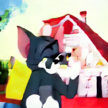
Fine-tuning SANA-Video 2B with LoRA to generate Tom & Jerry-style animations at 224×224 — from class-only LoRA to scene-aware text conditioning, all on a single consumer GPU.
Same seed and class prompt; only the LoRA checkpoint changes.
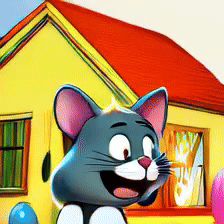
Base model: off-style 224×224 sample before LoRA fine-tuning.
Next: distillation, pruning, and quantization for deployment, plus more systematic evaluation (identity consistency, motion quality) and RL-style post-training to better align generations with scene descriptions.

Research playground around Sana 1.5 and Sana Sprint: ControlNet implementation and a SigLIP-driven zoom controller that smoothly changes camera distance while keeping identity and style consistent.
A zero-zoom reference image is encoded with SigLIP into an object token, while a scalar zoom value z ∈ [0, 1] is mapped through a small MLP to a zoom token. Both tokens are appended to the cached text encoding, and the Sana 1.5 transformer is fine-tuned with LoRA.
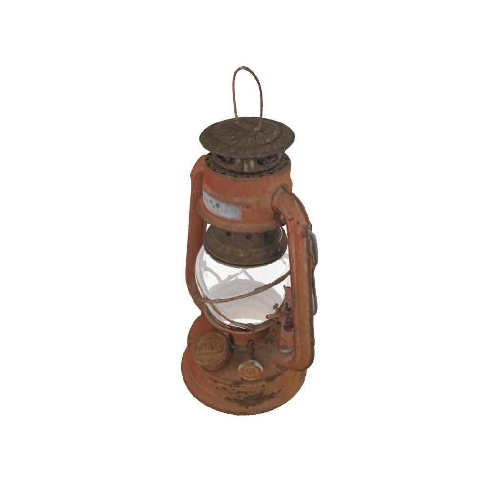
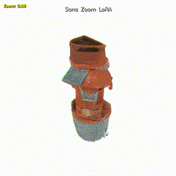

Small-footprint TTS with Kokoro-82M: fast mixture-of-voices coefficients, full-embedding optimization, and visual tooling (trajectory visualizer + export).
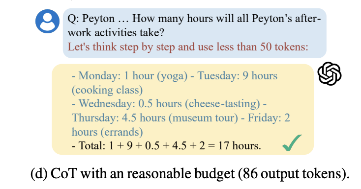
Built on Token-Budget-Aware LLM Reasoning, extended to multimodal setups by combining a frozen SigLIP image encoder with a LoRA-tuned LLM that predicts a reasoning budget prior to decoding.
The original paper asks whether we can control chain-of-thought with an adaptive token budget. This variant predicts the budget for multimodal inputs and constrains decoding accordingly.
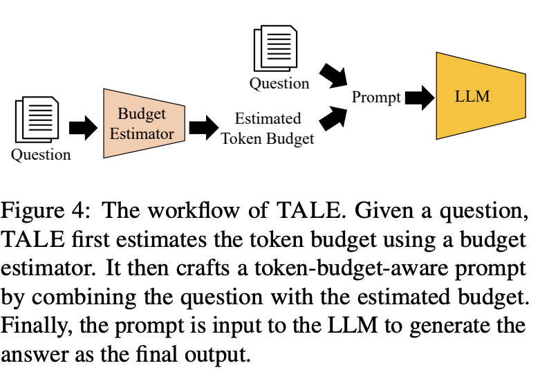
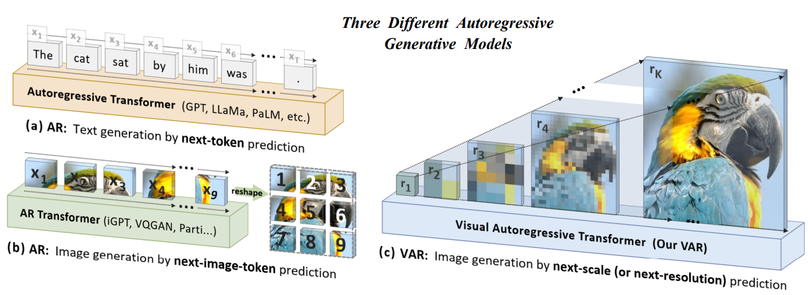
Adapted Visual AutoRegressive (VAR) for Funko Pop! generation with a custom "doll" embedding and a SigLIP→text adapter, enabling I→I and T→I paths.
Pick a name, character style, and action — the figure updates instantly.
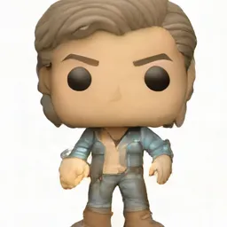
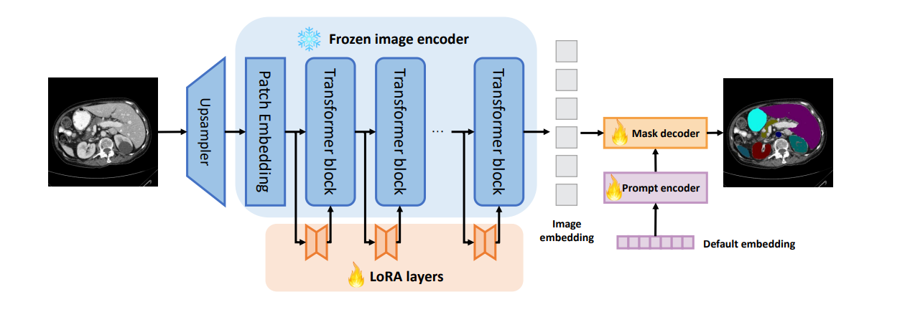
Adapted SAM and efficient variants (EdgeSAM, TinySAM) with LoRA for class-aware few-shot segmentation; improvements over PerSAM and edge deployment.
LoRA-adapted SAM variants with compression for edge deployment, with experimentation in extreme few-shot scenarios.
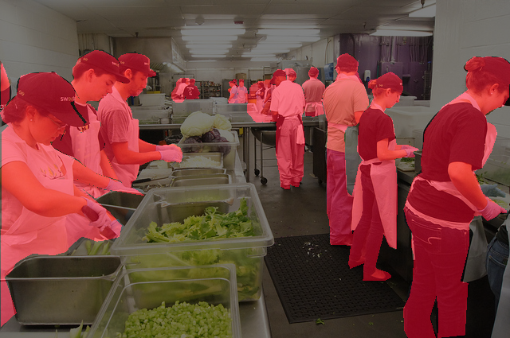
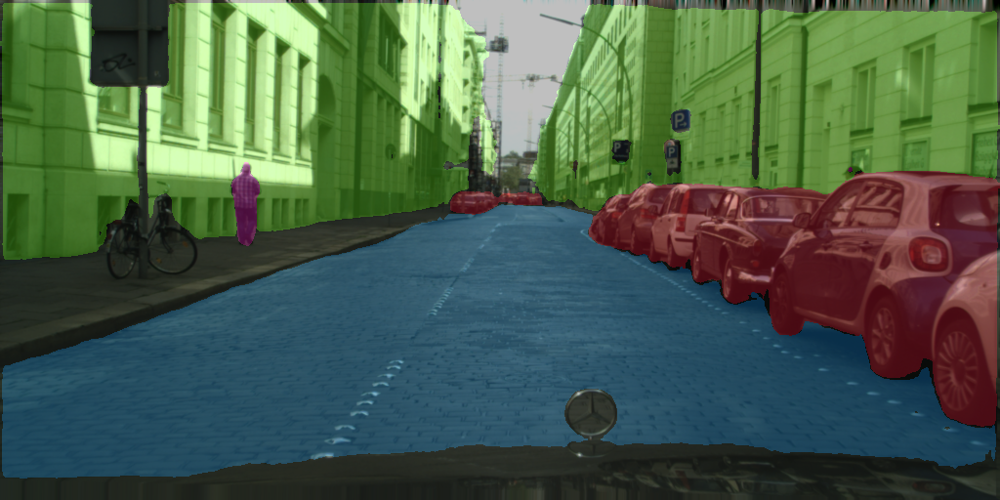
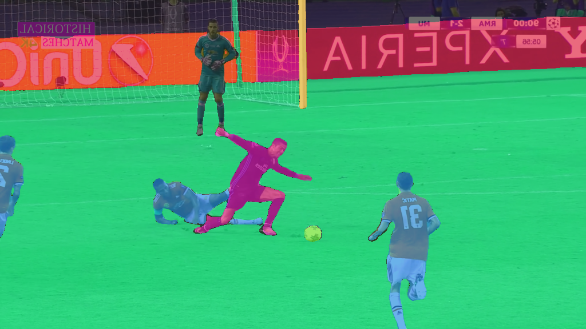

On-device face stylization with a distilled StyleGAN2 and CLIP-to-StyleGAN latent alignment; ~30 fps on modern phones.
Multi-stage pipeline with FastGAN and CLIP inversion for promptable Funko-style synthesis.
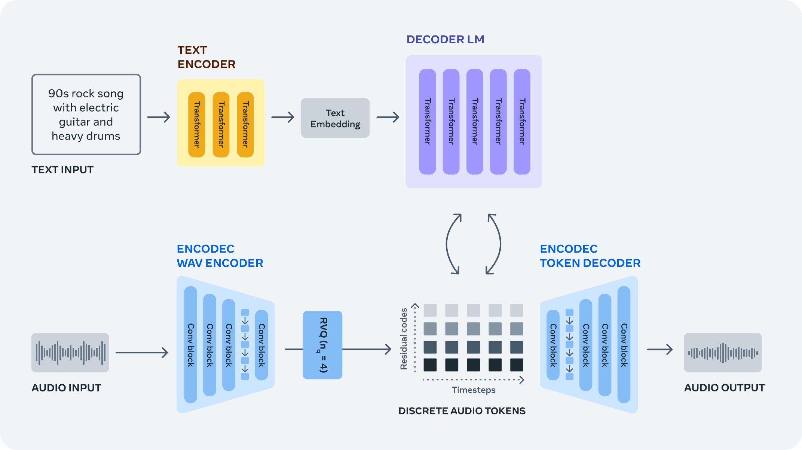
LoRA-adapts MusicGen for genre-specific generation while keeping prompt controllability.
Pipeline that turns AI research papers into short audio episodes published to Spotify and YouTube.
SGD with momentum, played by hand. Pick a learning rate, roll the ball to the flagged global minimum — local minima are traps, and too much lr ends in NaN.
The deepfake-detection problem, reduced to its purest form: ML paper titles. Half are real published research. Half were hallucinated by a language model for this site.
Auto-synced from my Zotero library — papers I'm currently working through.
Open to research collaborations, side projects, and interesting problems.